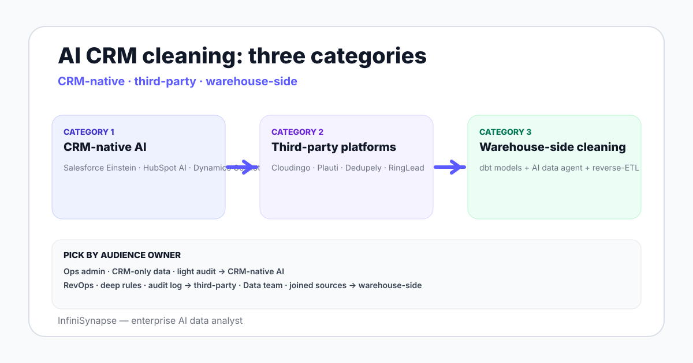

AI-Powered CRM Data Cleaning and Deduplication Platforms in 2026
AI-powered CRM data cleaning and deduplication platforms 2026 — Salesforce-native, HubSpot-native, third-party tools, evaluation, and warehouse-side cleaning.
AuthorInfiniSynapse Research, product and data architecture team
Published2026-06-28 · Last verified 2026-06-28 · Next review 2026-09-28
Evidence baseSalesforce Data.com and Einstein documentation, HubSpot AI cleaning reference, Cloudingo, Plauti, Dedupely product docs, hands-on testing of CRM cleaning workflows in 2026.
Disclosure: Published by InfiniSynapse, which sells an AI data analyst connected to warehouses where CRM data lands after sync. The guide describes the CRM-side cleaning landscape; warehouse-side cleaning is one option among several.
TL;DR
AI-powered CRM data cleaning splits into three categories: CRM-native AI (Salesforce Einstein, HubSpot AI), purpose-built third-party platforms (Cloudingo, Plauti, Dedupely, RingLead), and warehouse-side cleaning after sync (dbt + AI data agent).
CRM-native is the lowest setup cost — features ride along with platform licenses. Limits are coverage depth and merge logic flexibility.
Third-party platforms cover deeper match rules, batch and ongoing deduplication, mass updates, and validation against external sources.
Warehouse-side cleaning is the right choice when CRM data joins with payment, product, and other sources for cohort analysis or LTV — the cleaning happens once in dbt and serves every downstream consumer.
Picking by audience matters more than feature checklists — ops admins prefer CRM-native, data teams prefer warehouse-side, security-conscious teams prefer third-party with audit logs.
AI CRM data cleaning splits into CRM-native AI, purpose-built third-party platforms, and warehouse-side cleaning after sync. CRM-native is lowest setup cost with shallow match depth; third-party covers deeper rules and audit logs; warehouse-side is the right choice when CRM joins with other sources for analysis. Pick by team audience and downstream use.

CRM-native AI cleaning capabilities in 2026
CRM
Native AI cleaning features
Limits
Salesforce
Data.com cleaning, Einstein Data Detective, Duplicate Management, AI-suggested merges
Match rules can be limited; mass merge UI is improving but not always batch-friendly
HubSpot
AI-assisted duplicate management, property suggestions, format normalization
Deduplication coverage focused on contacts and companies; deal-level rules thinner
Microsoft Dynamics 365
Duplicate detection rules, Copilot in CRM
Setup overhead heavier than competing CRMs
CRM-native features are the lowest setup cost — they ride along with the platform license. The tradeoff is depth: match rule flexibility, merge logic, and audit log depth often outgrow native capabilities for mature CRM teams.
Third-party AI CRM cleaning platforms
Cloudingo. Long-running Salesforce-focused deduplication platform with deep match rules, batch and ongoing dedupe, and mass update.
Plauti. Salesforce-native and external CRM cleaning with strong validation against external sources (address, phone, email validity).
Dedupely. HubSpot and Pipedrive deduplication with simpler UX and faster setup; less depth than Cloudingo.
RingLead. Multi-CRM data orchestration covering deduplication, validation, segmentation routing.
OpenPrise / Insycle. Pre-integration tools that clean records before they reach the CRM.
Third-party platforms cover the depth native CRMs lack — fuzzy match thresholds tunable per use case, audit trails per merge, sandbox dry-runs before changes go live.
Six evaluation criteria
Match rule flexibility. Fuzzy match thresholds, multi-field rules, weighted scoring.
Merge logic. Field-level master record selection, history preservation, rollback ability.
Audit log depth. Per-merge trail with who, what, when, and the rule that fired.
Batch vs ongoing dedupe. Both modes matter — initial cleanup and steady-state hygiene.
External validation. Address, phone, email, business name verification against external sources.
Cost model. Per record, per seat, per CRM — and how it scales with database growth.
Two cleaning workflow patterns
Pattern A — CRM-side cleaning
Data lives in the CRM; cleaning happens in the CRM via native AI or a third-party platform. Match rules and merges happen against live records. This is the right pattern when the CRM is the system of record and downstream consumers read from the CRM directly via API or reverse-ETL.
Pattern B — Warehouse-side cleaning
CRM data syncs to a warehouse via Fivetran, Airbyte, or platform-native exports; cleaning happens in dbt models against the synced copy. The clean version flows back to the CRM via reverse-ETL (Hightouch, Census) and feeds BI dashboards and AI data agents. This is the right pattern when CRM data joins with payment, product, or other source data for cohort analysis and LTV calculation.
Warehouse-side CRM cleaning with dbt and AI agents
The warehouse-side pattern has three pieces:
Sync. Fivetran, Airbyte, or platform-native syncs CRM tables to Snowflake, BigQuery, or Postgres.
Clean in dbt. staging models normalize names, addresses, and dates; intermediate models cluster duplicates with deterministic SQL; tests catch regressions.
Verify with an AI agent. An AI data analyst runs ad-hoc checks — find duplicate company patterns, flag accounts with mismatched country and address, detect deal-stage skips. The agent emits a plan, SQL, and verification step per check.
Sync clean values back. Hightouch or Census pushes canonical company names and validated emails back into the CRM.
The pattern is heavier setup than CRM-native cleaning but pays off when CRM data is one of many sources downstream consumers join together. See data integration platforms for the loader choice.
A selection rubric
Who owns CRM data quality — ops admin, RevOps team, or central data team?
Does CRM data join with other sources for analysis, or live mostly in the CRM?
How big is the dedupe backlog versus the ongoing-hygiene need?
What audit posture do you need on merges?
What is the budget per record per year?
Does the team have dbt and warehouse skills?
Ops admin owner + CRM-only data + light audit → CRM-native AI. RevOps owner + deep match rules + audit → third-party platform like Cloudingo or Plauti. Data team owner + CRM joined with other sources + dbt skills → warehouse-side pattern.
CRM data cleaning is not one job — it is at least three jobs split across at least three audiences. Pick the platform for the audience that owns the work, not for a feature checklist.
Add ad-hoc CRM cleaning checks on your warehouse
After your Salesforce or HubSpot sync lands in Snowflake, BigQuery, or Postgres, connect an AI data agent read-only. Seed a small CRM cleaning glossary — what counts as a duplicate, which fields are canonical. Then ask one ongoing-hygiene question and verify the result.
Platforms that use AI techniques — fuzzy matching, fuzzy classification, external validation against trusted sources — to deduplicate, standardize, and enrich CRM records. The category covers CRM-native AI features like Salesforce Einstein and HubSpot AI, purpose-built third-party platforms like Cloudingo, Plauti, and Dedupely, and warehouse-side cleaning patterns that run after CRM data syncs to a data warehouse.
What is the best CRM deduplication tool in 2026?
There is no single best tool — there is a best category for your team. Salesforce teams with mature dedupe backlogs often pick Cloudingo or Plauti for the depth of match rules and audit logs. HubSpot teams with simpler needs land on Dedupely or HubSpot native AI features. Data teams that join CRM with payments, product, and other sources prefer the warehouse-side pattern with dbt models and an AI data agent for ad-hoc checks.
How does AI help deduplicate CRM records?
AI handles three jobs better than rule-based dedupe alone: fuzzy matching on company name variants like Acme Inc versus Acme, Inc versus ACME INC, clustering similar contact records across multiple fields with weighted scoring, and validating external attributes like addresses, phone numbers, and email deliverability against trusted sources. The AI prints the rules it used so the merge has an audit trail.
Should I clean CRM data in the CRM or in a warehouse?
CRM-side cleaning fits when the CRM is the system of record, ops admins own data quality, and downstream consumers read from the CRM directly via API or reverse-ETL. Warehouse-side cleaning fits when CRM data joins with payment, product, or other source data for cohort and LTV analysis, when a central data team owns the work, and when dbt and warehouse skills exist on the team. Both patterns are credible.
What is the difference between Cloudingo and Plauti?
Both are Salesforce-focused deduplication platforms with deep match rules and audit logs. Cloudingo has a longer track record and is widely deployed across Salesforce orgs with complex dedupe backlogs. Plauti adds stronger validation against external sources for addresses, phone numbers, and email deliverability, and extends beyond Salesforce. Pick by which capability — pure dedupe depth or validation breadth — matters more for your use case.
How do I evaluate AI CRM cleaning platforms?
Six criteria: match rule flexibility for fuzzy thresholds and multi-field weighted scoring, merge logic for field-level master record selection and rollback ability, audit log depth with per-merge trail, batch versus ongoing dedupe modes since both matter for initial cleanup and steady-state hygiene, external validation for addresses and phones and emails, and the cost model per record or seat or CRM as it scales with database growth.
What does warehouse-side CRM cleaning look like?
Three pieces. First, sync CRM tables to a warehouse via Fivetran, Airbyte, or platform-native export. Second, clean in dbt models — staging normalizes names and addresses, intermediate clusters duplicates with deterministic SQL, tests catch regressions. Third, verify with an AI data agent that runs ad-hoc checks — find duplicate company patterns, flag mismatched country and address, detect deal-stage skips — and emit a plan, SQL, and verification step per check. Sync clean values back via reverse-ETL.
Methodology and review notes
Last updated: 2026-06-28 · Next scheduled review: 2026-09-28
This buyer guide synthesizes Salesforce Data.com, Einstein, and Duplicate Management documentation, HubSpot AI cleaning reference, Cloudingo, Plauti, Dedupely, and RingLead product documentation, the dbt analytics engineering guide for warehouse-side cleaning patterns, and field experience with RevOps and central data teams cleaning CRM data across Salesforce and HubSpot in 2026.
Conflict of interest: InfiniSynapse publishes this guide and sells an enterprise AI data analyst. To reduce bias, the page leads with the topic itself, treats InfiniSynapse as one option among many, and links to external sources for every numeric claim.
Update cadence: Reviewed every 90 days for accuracy and link health.
Sources and references
[Vendor] Salesforce. Einstein Data Detective documentation. help.salesforce.com.